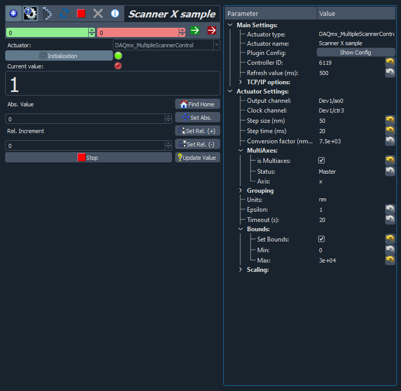

Using the ScannerControl and MultipleScannerControl moves
These plugins allow you to use an analog output of a NI device to control a piezoelectric scanner. It was made for use with Attocube scanners, with an amplifier between the NI card and the scanner, but it should work with any type of scanner that takes a voltage as input.
The main difference between the two is that ScannerControl cannot reliably be used with the Scan extension. It is therefore recommended to use MultipleScannerControl, which can also control a single scanner. This page is thus focussing on the latter.
The position is set in nm. The primary use of this plugin is to control the XY scanning of an atomic force microscope, meaning that the movement is quite slow on purpose, to avoid damaging the tip. Very fast operation is not tested.
Configuration
Master
As you can see on the screenshot below, you need to specify several parameters:
Output channel: the output of the NI card which is connected to the scanner, something like
Dev[X]/ao[Y].Clock channel: the channel that you will use for timing of the movement, to set a specific movement speed of the scanner, something like
Dev[X]/ctr[Y].Step size: in nm.
Step time: in ms, the combination of step size and step time sets the moving speed.
Conversion factor: in nm/V, this is the coefficient to convert the voltage at the output of the card into a displacement.
Status: set it to “Master” for the first scanner, the others will be treated as “Slaves” sharing the same clock, see below.
Timeout: in s, be careful to set it large enough for slow movements if needed.
Bounds: in nm, you should set them to the range reachable by your scanner.

{kind=link}
Slave
As there is a small number of counter/clock channels available on a NI card, you most probably cannot use a different clock channel for each scanner. The MultipleScannerControl plugin allows you to configure scanners as “Slave” of the initial one, as shown in the screenshot below.
{kind=link}
The parameters to set are identical, except that there is no clock channel or step time, as these parameters will be taken from the master scanner. Be careful to set the proper Controller ID.
Use
This plugin works as a regular daq move plugin. You will notice that the position never goes to 0 but stays at 1 nm because it was creating errors. Be careful that when the plugin restarts, the scanner goes back to 1 nm in one single step, as there is no way to read the scanner position from the NI card.
As mentioned before, this plugin is meant for slow movements. If you ask for a position change larger than the step size parameter, a list of positions will be sent to the NI card to perform the movement in several steps, waiting for the duration indicated by step time between each step. Related to this, during a scan, you should avoid making several steps between each pixel, so it is recommended to set the step size in the scanner configuration to a larger value than the step size in the Scan extension.
If you need to use one of the clock channel with another plugin, do not forget to stop the movement by clicking on the red square, otherwise you will get an error about the resource being busy. Do it even if the movement looks over.
You might get many warnings in the log about the task being stopped before being finished, do not worry about it, the scanner is still fine. If you know how to solve this, please contribute!